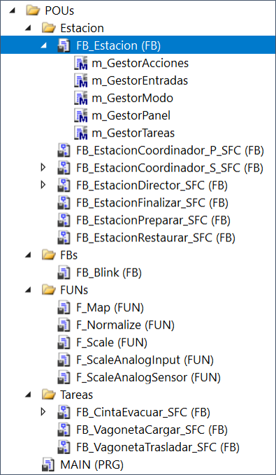
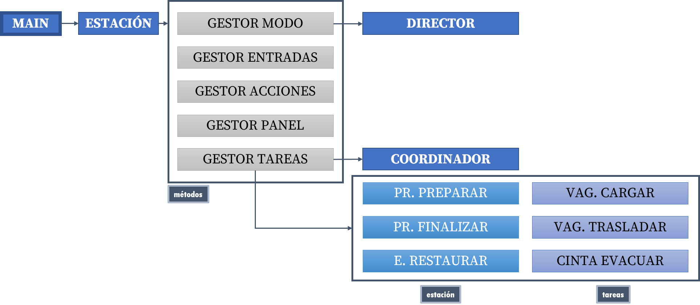
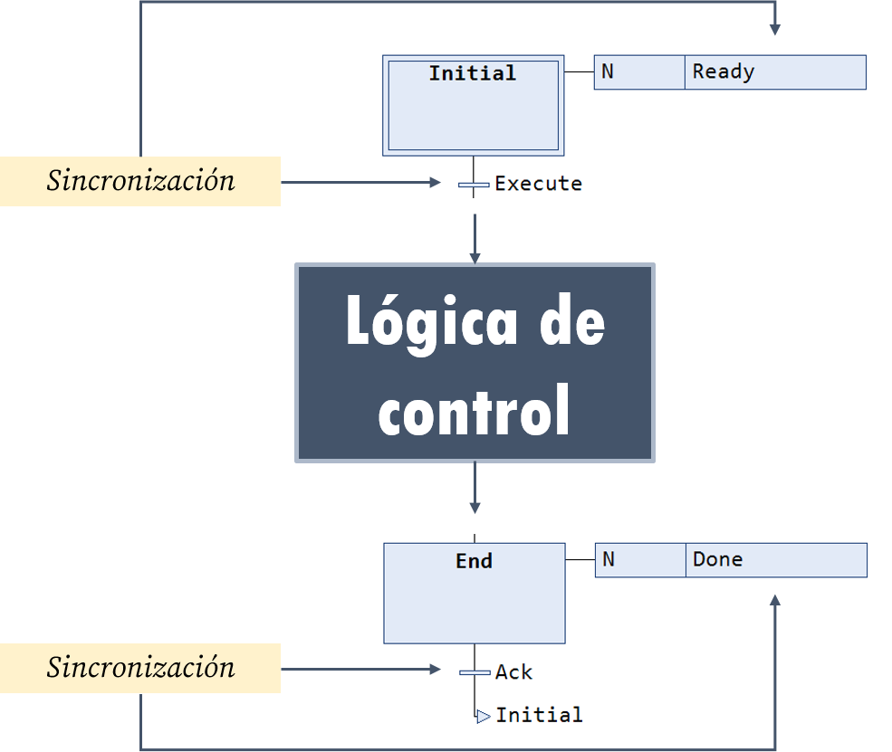
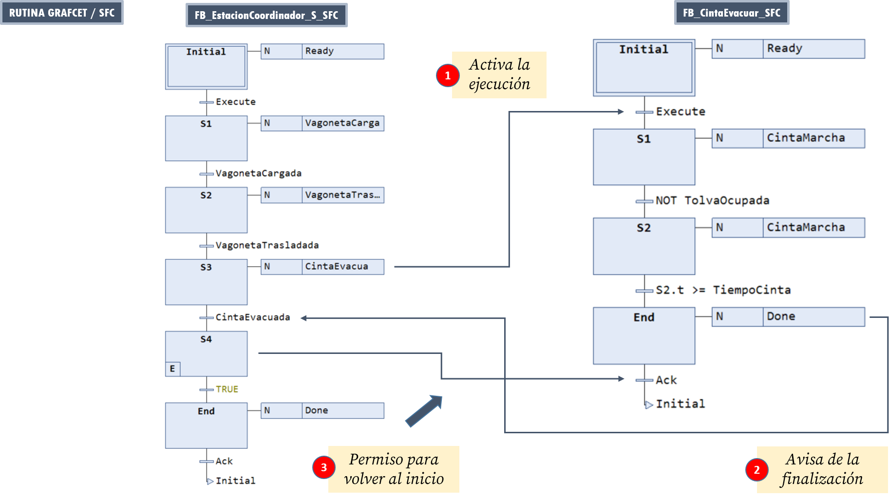
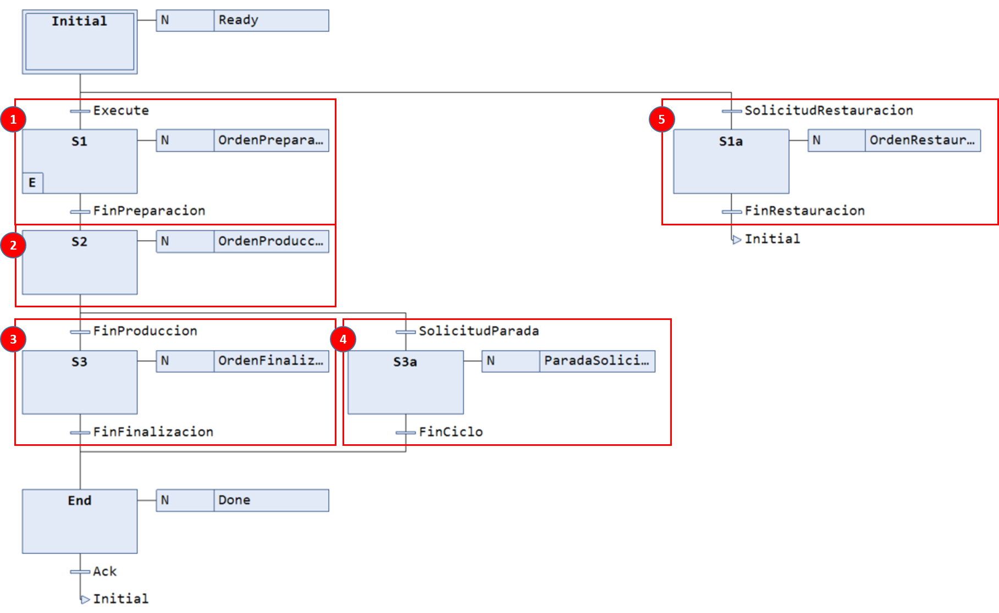
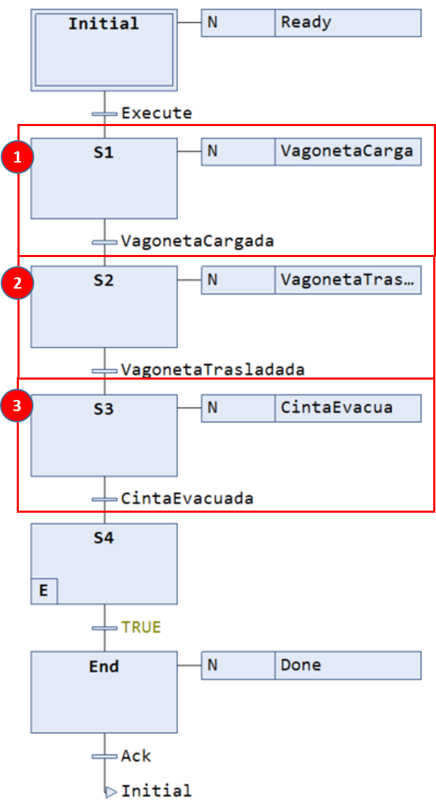
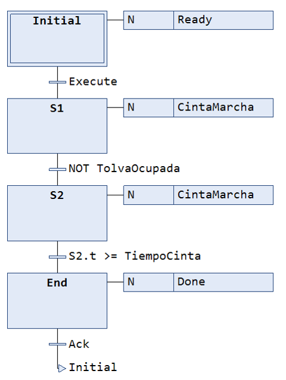
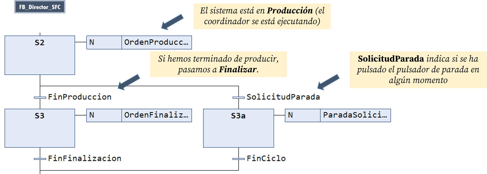
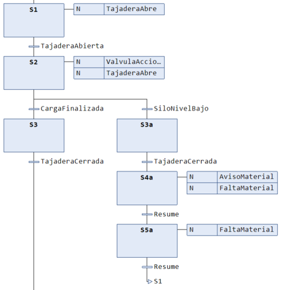

Carro Extendido Estructurado¶
NOTAS
- La descripción general sobre este ejemplo puede encontrarse aquí.
- Descargue y abra el proyecto en una ventana de TwinCAT3 para seguir la explicación.
En esta implementación estructurada del carro extendido, presentamos una primera automatización real organizada en tareas, es decir, la lógica de control está distribuida en lugar de concentrada en un solo bloque funcional.
Arquitectura¶
En esta implementación, la arquitectura se divide en el siguiente conjunto de bloques funcionales:
Estación(ST): contenedor principalDirector(SFC): gestión del modo de funcionamiento (Reposo, Preparación, Producción, Finalización, Parada Solicitada, Restauración)Coordinador(SFC): coordinación de tareas para la producción normalTareas(SFC): sub-secuencias que implementan las distintas funcionalidades (conjunto de etapas/transiciones con sentido propio)

La implementación se estructura de la siguiente manera:
MAIN → Estación → Director → Coordinador + Tareas (funcionalidades)

Como se observa en la figura, la Estación es un contenedor de datos y métodos desde donde se llama al resto de bloques funcionales. Cada bloque funcional distinto de la Estación se implementa como una rutina GRAFCET que permite su sincronización con el resto de FBs, tal y como se verá más adelante.
Funcionalidades¶
La lista de funcionalidades es prácticamente la misma que en el caso MONO aunque en esta implementación se incorporan nuevos conceptos como los métodos o la funciones y se añade una serie de mejoras y extensiones.
Tabla de contenidos
Uso de secuencias de preparación, finalización y restauración
Consejo
Utiliza el menú de la derecha para ir directamente a la explicación de cada funcionalidad.
Uso de rutinas GRAFCET/SFC¶
Una rutina GRAFCET/SFC consiste en un conjunto de etapas con una estructura definida que implementan la lógica de control de una funcionalidad concreta. Aunque en este proyecto se distinguirán entre rutinas de coordinación/dirección y rutinas de tareas, estructuralmente son idénticas.
Las rutinas GRAFCET/SFC tienen la siguiente estructura:

La lógica de control se encapsula entre dos etapas Initial y End, que podemos entender como etapas de espera que permiten sincronizar la ejecución de la rutina con otras rutinas.
Las señales Ready, Done, Execute y Ack sirven para sincronizar la ejecución de la secuencia de la rutina con el resto de rutinas. Las dos primeras permiten comunicar que la rutina está en su estado inicial o que ya ha terminado su secuencia, mientras que las dos últimas permiten iniciar la secuencia y volver al inicio.
Consejo
Analice el código de los FBs del proyecto para ver ejemplos de esta estructura.
A modo de ejemplo, considere el siguiente esquema donde la rutina FB_EstacionCoordinador_S_SFC se sincroniza con la rutina F_CintaEvacuar_SFC. Cuando la primera activa la señal CintaEvacua, la transición regida por Execute en la segunda rutina se dispara, ejecutándose su lógica de control hasta alcanzar la etapa End. En ese momento, activa la señal Done que dispara la transición regida por la señal CintaEvacuada en la primera rutina (que estaba detenida) y hace que continúe su ejecución. Al pasar a la siguiente etapa, se activa la señal Ack en la segunda rutina para que esta vuelva al inicio.

Esta sincronización (o la conexión entre las distintas señales) se realiza en el FB que llama a ambas rutinas, en este caso, el FB FB_Estacion. En concreto, si miramos dentro del método m_GestorTareas, podemos ver el siguiente código:
Declaración en FB_Estacion
VAR
[...]
Coordinador: FB_EstacionCoordinador_S_SFC;
CintaEvacuar: FB_CintaEvacuar_SFC;
[...]
END_VAR
Implementación dentro de m_GestorTareas
[...]
Coordinador(
ManiobrasPendientes := ManiobrasPendientes,
ManiobrasRealizadas := ManiobrasRealizadas,
SFCReset := ReiniciaEstado,
SFCPause := OrdenPausa,
Execute := Director.OrdenProduccion,
Ack := ContinuacionAutorizada,
VagonetaCargada := VagonetaCargar.Done,
VagonetaTrasladada := VagonetaTrasladar.Done,
CintaEvacuada := CintaEvacuar.Done, // 2
);
[...]
CintaEvacuar(
SFCReset := ReiniciaEstado,
SFCPause := OrdenPausa,
Execute := Coordinador.CintaEvacua, // 1
Ack := NOT Coordinador.CintaEvacua,
TolvaOcupada := i_TolvaOcupada,
TiempoCinta := TiempoCinta
);
[...]
Nótese como se asigna la señal Coordinador.CintaEvacua a la señal Execute de CintaEvacuar (línea 1), y la señal CintaEvacuar.Done a la señal CintaEvacuada de Coordinador (línea 2).
Consejo
Inspeccione el código del FB del Coordinador y el de las tareas relacionadas con la cinta y la vagoneta para ver más ejemplos de esta sincronización.
Rutina de dirección¶
Esta rutina está implementada en un FB en SFC y encapsula la secuencia completa (no solo producción) de la estación a alto nivel.

Nótese cómo la secuencia incluye etapas de:
- Preparación
- Producción
- Finalización
- Solicitud de parada
- Restauración
Cada etapa activará una señal que disparará la ejecución de otro FB y se parará hasta que este indique que ha terminado. Por ejemplo, la señal OrdenPreparacion activará la señal Execute del FB_EstacionPreparar y la señal FinPreparacion se activará cuando este active su señal Done.
Rutina de coordinación¶
En un nivel de abstracción inferior al Director, encontramos al Coordinador, que se encargará de gestionar la secuencia de producción mediante la llamada a las distintas rutinas de tareas.

En las etapas marcadas como 1, 2 y 3, el Coordinador activa señales que dispararán la ejecución de las secuencias de las tareas: cargar vagoneta, trasladar vagoneta y gestionar la cinta transportadora.
Nota
Nótese cómo la señal Execute del Coordinador (que dispara su funcionamiento) se activará cuando el Coordinador active su señal OrdenProducción (etapa 2 en la imagen anterior).
Una vez terminadas las activaciones de las rutinas de las tareas de producción, el Coordinador decrementará la variable contadora de maniobras (a la entrada de S4) y terminará en la etapa End donde se activará la señal Done. En este punto, habrá terminado un ciclo y quedará a la espera de que la señal Ack se active antes de volver al inicio.
Una vez se vuelva al inicio, si su señal Execute sigue activa, se volverá a realizar un nuevo ciclo de producción.
Rutinas de tareas¶
Finalmente, tendremos FBs dedicados a cada una de las tareas de la estación. Cada una de ellas se puede entender como una subrutina que realiza una tarea específica. En este ejemplo, tendremos rutinas que podemos agrupar conceptualmente en dos grupos:
- Tareas de producción: cargar vagoneta, trasladar vagoneta, gestionar cinta.
- Tareas de gestión de la estación: preparar, finalizar y restaurar.
A modo de ejemplo, en la figura se puede observar el código de la rutina que se encarga de evacuar el material por la cinta transportadora

Uso de métodos¶
En TwinCAT 3, un método es una función que pertenece a un bloque funcional y que tiene acceso a sus variables internas. Puede recibir parámetros de entrada y salida e incluso devolver un valor (opcional). Conceptualmente, es similar a una función, pero ligada al contexto del FB.
Un método sirve principalmente para organizar el código en partes reutilizables y claras dentro del FB, encapsulando la lógica específica del bloque. Así, se evita repetir código y mejora la modularidad y su mantenimiento.
Para crear un método asociado a un FB, en el árbol del proyecto, haga CD sobre el FB y pulse Add → Method. En el menú contextual, hay que definir:
- El nombre del método
- Tipo del valor devuelto (opcional).
- El lenguaje que vamos a utilizar en la implementación (nosotros usaremos
ST).
Importante
Por claridad, tomaremos la convención de añadir un prefijo m_ al nombre de los métodos.
Una vez creado, deberemos declarar variables de entrada/salida (si queremos usarlas, recuerde que el método ya tiene acceso a todas las variables del bloque funcional) e implementar el código.
Para usarlos, basta con llamar a su código desde una instancia del bloque funcional. Por ejemplo:
m_GestorEntradas();
En este ejemplo, hemos encapsulado las funcionalidades de la estación dentro de distintos métodos:
m_GestorEntradas. Tareas de acondicionamiento de señales de entrada.m_GestorAcciones. Procesamiento de las acciones (solo en modo automático).m_GestorPanel. Gestión de la señalización en el panel del operador (solo en modo automático).m_GestorModo. Toma de decisiones de nivel superiorm_GestorTareas. Procesamiento del estado (solo en modo automático).
Gestor de Entradas¶
Este método se ejecuta tanto en modo manual como en automático y se encarga de realizar el acondicionamiento de las entradas al PLC. Esto incluye:
- Ejecución de los detectores de flanco para los pulsadores.
- Conversión de las unidades y rangos de las medidas analógicas: sensor de distancia en el silo y peso de la vagoneta.
- Cálculo de variables de estado del sistema como:
CondicionInicial,OrdenPausa,ModoAutomatico,SolicitudMarcha, etc.
Gestor de Acciones¶
Este método solo se ejecuta en modo automático y encapsula las activaciones de las salidas del sistema relacionadas con:
- La vagoneta (marcha)
- El silo (tajadera y válvula)
- El sistema hidráulico (activación, compuerta y volquete)
- La cinta transportadora (marcha)
Estas salidas se activarán cuando los distintos FBs de las tareas lo demanden. Por ejemplo, el código:
o_VolqueteBaja := NOT OrdenPausa
AND (VagonetaTrasladar.VolqueteBaja OR EstacionRestaurar.VolqueteBaja);
realizará la bajada del volquete cuando el FB VagonetaTrasladar active su variable VolqueteBaja o cuando el FB EstacionRestaurar active su variable VolqueteBaja (siempre que no esté activa la señal OrdenPausa).
Nota
Al ejecutarse solo en modo automático, este método dejará libres las salidas en modo manual para que puedan ser accionadas desde la visualización.
Gestor de Panel¶
En este método se activarán los avisadores que tienen que ver con el panel del operador:
- Avisador sonoro
- Lámpara de alarma
- Lámpara de marcha
- Lámpara de parada
- Lámpara de material
Además, se calcularán algunas variables de estado que se utilizarán en este método como MarchaAutorizada, SistemaEnEspera, etc.
Estas salidas se comportarán de manera diferente en distintas situaciones. Por ejemplo, la lámpara de parada se iluminará de forma fija cuando el sistema está en espera y parpadeará cuando se haya solicitado la parada:
o_LamparaParada := SistemaEnEspera
OR (Director.ParadaSolicitada AND Intermitencia.Q);
Nótese que, para permitir que estas salidas se activen intermitentemente, en este método se llamará al FB que permite la intermitencia: Intermitencia.
Gestor de Modo¶
Este método se encarga de determinar en qué modo está la estación: Reposo, Preparación, Producción, Finalización, Parada Solicitada y Restauración, y pasar esta información al FB_Director, el cual se encargará de hacer evolucionar el sistema de un modo a otro.
NOTA
El gestor de modo debe ejecutarse tanto en modo automático como manual.
Gestor de Tareas¶
En este último método, encapsulamos la llamada a las rutinas relacionadas con las tareas, incluyendo al Coordinador.
Como se puede observar en el código, este método se limita a llamar a los FBs correspondientes, enlazando las entradas y salidas para conseguir la sincronización entre las rutinas.
Nótese, por ejemplo, el siguiente trozo de código:
ProduccionPreparar(
SFCReset := ReiniciaEstado,
SFCPause := OrdenPausa,
Execute := Director.OrdenPreparacion,
Ack := NOT Director.OrdenPreparacion,
TiempoPreparacion := TiempoPreparacion
);
donde se observa que la rutina correspondiente a la preparación de la estación se ejecutará cuando el Director lo ordene activando OrdenPreparacion.
De manera similar, en este trozo de código:
Coordinador(
ManiobrasPendientes := ManiobrasPendientes,
ManiobrasRealizadas := ManiobrasRealizadas,
SFCReset := ReiniciaEstado,
SFCPause := OrdenPausa,
Execute := Director.OrdenProduccion,
Ack := ContinuacionAutorizada,
VagonetaCargada := VagonetaCargar.Done,
VagonetaTrasladada := VagonetaTrasladar.Done,
CintaEvacuada := CintaEvacuar.Done,
);
puede observarse cómo las señales Done de los distintos FBs de tareas se asocian a las variables de entrada del Coordinador que le permitirán evolucionar en su secuencia.
Consejo
Inspecciona cuidadosamente el código de este método para entender las asociaciones entre las señales de sincronización.
Uso de secuencias de preparación, finalización y restauración¶
En esta versión, usaremos rutinas GRAFCET para implementar algunas secuencias relacionadas con la estación que no tienen que ver directamente con la producción, sino que solucionan situaciones especiales de la estación. En concreto, definiremos secuencias de:
- Preparación, que se encarga de realizar todas aquellas acciones necesarias para preparar la estación para empezar a producir.
- Finalización, que implementa la secuencia de pasos a realizar tras terminar la producción, para dejar la estación en reposo.
- Restauración, que se encarga de tratar de recuperar las condiciones iniciales.
Consejo
Inspeccione el código de los FBs de preparación, finalización y restauración en el ejemplo para ver la secuencia de pasos en cada caso. Nótese que, en los dos primeros, lo único que se hace en este ejemplo es activar el avisador sonoro durante un tiempo. En el de restauración, por el contrario, sí se realiza una secuencia de pasos para recuperar las condiciones iniciales.
Uso de funciones¶
En TwinCAT 3, una función (Function, FUN) es un bloque de código independiente que realiza un cálculo y devuelve un valor sin tener un estado interno persistente, es decir, no mantiene memoria entre ejecuciones.
Así, una función recibe datos de entrada, ejecuta una operación y devuelve un único valor de forma obligatoria. Su uso se circunscribe, normalmente, para realizar cálculos concretos y reutilizables (por ejemplo, acondicionamiento de señales), simplificar expresiones complejas, evitar duplicar lógica matemática o de procesamiento y hacer el código más claro y modular
En nuestro ejemplo del carro extendido las usaremos para realizar el acondicionamiento de las señales analógicas.
Las funciones no están asociadas a un FB concreto, sino que forman parte de las utilidades que podemos crear en nuestro proyecto. Para crear una función, en el árbol del proyecto, hay que hacer CD sobre la carpeta POUs y pulsar Add → POU. En el menú contextual, hay que cambiar el lenguaje de programación a alguno distinto a SFC (al no tener estado interno, las funciones no pueden ser implementadas en SFC). En nuestro caso usaremos ST, como habitualmente. Posteriormente, habrá que seleccionar Function y definir:
- El nombre de la función
- Tipo del valor devuelto (obligatorio).
Importante
Por claridad, tomaremos la convención de añadir un prefijo F_ al nombre de las funciones.
Una vez creada, deberemos declarar las variables de entrada e implementar el código. Hay que tener en cuenta que el valor de salida se asigna utilizando el nombre de la propia función. Por ejemplo, para una función F_Map, el valor que devuelve se asigna como:
F_Map := OutMin + (Value - InMin) * OutRange / InRange;
Para usarlas, basta con llamar a su código utilizando el nombre de la función, asignando su salida a alguna variable. Por ejemplo:
SiloDistanciaMedida := F_ScaleAnalogSensor(
RawInput := i_SensorNivel,
Parameters := SensorNivelParams
);
donde F_ScaleAnalogSensor es el nombre de la función y RawInput y Parameters son sus variables de entrada. La salida se le asignará a la variable SiloDistanciaMedida.
Uso de estructuras¶
En TwinCAT 3, una estructura (STRUCT) es un tipo de dato compuesto que agrupa varias variables (que pueden ser de distinto tipo) bajo un mismo nombre.
En este ejemplo se utilizan para guardar los parámetros que pasan a la función de acondicionamiento de señales analógicas: F_ScaleAnalogSensor. Nótese como en su sección de variables de entrada se incluyen:
FUNCTION F_ScaleAnalogSensor : REAL
VAR_INPUT
RawInput : INT;
Parameters : ST_SensorAnalogicoParams; // Estructura
END_VAR
El tipo ST_SensorAnalogicoParams es una estructura que incluye:
TYPE ST_SensorAnalogicoParams :
STRUCT
RawMin : INT;
RawMax : INT;
ValueMin : REAL;
ValueMax : REAL;
Offset : REAL;
END_STRUCT
END_TYPE
Importante
Por claridad, tomaremos la convención de añadir un prefijo ST_ al nombre de las estructuras.
Puede encontrar más información sobre las estructuras, su uso y declaración aquí.
Mejoras y extensiones¶
Finalmente, en esta implementación del carro extendido estructurado se han realizado una serie de mejoras y extensiones respecto a la versión monolítica, que se explican a continuación.
Implementación del modo manual correcta y adecuada¶
A diferencia de como se hacía en la versión monolítica, se ha implementado la identificación del modo manual/automático sin acceder de manera directa, en el programa principal MAIN, a la variable asociada al conmutador de selección de modo del panel del operador. Esta gestión se realiza ahora dentro del FB de la propia estación, encapsulando esta funcionalidad dentro del mismo y evitando el artificio anterior.
En este FB dispondremos de una variable de estado llamada ModoAutomatico que tomará el valor TRUE cuando el selector de modo así lo indique. Esta variable toma su valor dentro del método de gestor de entradas:
// en m_GestorEntradas
ModoAutomatico := NOT i_SelectorManual;
y se utiliza en el código principal de la estación de esta manera:
m_GestorEntradas(); // Acondicionamiento de señales
m_GestorModo(); // Toma de decisiones de nivel superior
// Ejecución de la lógica de control en modo automático
IF ModoAutomatico THEN
m_GestorTareas(); // Procesamiento del estado
m_GestorPanel(); // Gestión de la señalización
m_GestorAcciones(); // Procesamiento de las acciones
END_IF;
De esta manera, dejamos de exponer, de forma directa, la variable asociada al hardware (i_SelectorManual) a los FBs distintos al de la estación.
Implementación sencilla de la pausa a final de ciclo¶
Para implementar la pausa (que no parada) al final de ciclo, hemos utilizado la señal Ack de la rutina GRAFCET del Coordinador. Como se explicó en su sección correspondiente, el Coordinador implementa un ciclo de producción completo del sistema, finalizando en la etapa End donde quedará a la espera de que la señal Ack se active antes de volver al inicio.
En la llamada al FB del Coordinador, esta señal Ack está asignada a la variable ContinuacionAutorizada:
// en el método m_GestorTareas
Coordinador(
ManiobrasPendientes := ManiobrasPendientes,
ManiobrasRealizadas := ManiobrasRealizadas,
SFCReset := ReiniciaEstado,
SFCPause := OrdenPausa,
Execute := Director.OrdenProduccion,
Ack := ContinuacionAutorizada, // <---
VagonetaCargada := VagonetaCargar.Done,
VagonetaTrasladada := VagonetaTrasladar.Done,
CintaEvacuada := CintaEvacuar.Done,
);
la cual toma su valor de esta forma:
ContinuacionAutorizada := NOT PausaTrasCiclo OR SolicitudMarcha;
De esta forma, el Coordinador volverá a su etapa inicial si no está activa la señal PausaTrasCiclo (controlada en la visualización) o, si está activa, cuando SolicitudMarcha esté activa. Si observa el método m_GestorEntradas, SolicitudMarcha está asignada a la detección del flanco positivo del pulsador de marcha.
SolicitudMarcha := FlancoPulsadorMarcha.Q;
Así, cuando la pausa a final de ciclo esté activa, pasaremos al siguiente ciclo cuando se pulse el pulsador de marcha.
Implementación sencilla de la parada pedida¶
En esta versión, hemos utilizado la captura del flanco del pulsador de parada para solicitar la parada de la producción al final del ciclo actual. De esta manera, cuando se pulse el pulsador de parada durante la ejecución de alguno de los ciclos, el sistema capturará este suceso y, cuando se alcance el final de ciclo, el sistema dejará de producir inmediatamente.
Esto se realiza en el método de gestión de entradas:
// en m_GestionEntradas
SolicitudParada := FlancoPulsadorParada.Q;
que, recuerde, se ejecuta en cada ciclo del PLC.
Posteriormente, este valor se le pasa como entrada al Director para que evolucione por su rama derecha una vez haya terminado un ciclo.

Fíjese en este trozo de código del FB_Director. En él se puede observar que, una vez dada la orden de producir (OrdenProducción = TRUE, lo que dispara la ejecución del Coordinador), el Director queda a la espera de que ocurra alguna de estas dos situaciones:
- Se acaba la producción (
FinProducción = TRUE). En este caso, hemos alcanzado el final de la producción, lo cual ocurre cuando el número de maniobras pendientes ha llegado a0en producción por lotes. Entonces se pasa a finalizar la producción y termina el programa. - Se ha solicitado la parada a final de ciclo (
SolicitudParada = TRUE). En este caso, esta variable se ha activado porque en algún momento durante la producción se pulsó el pulsador de parada. Entonces, se activa una señal deParadaSolicitada, que se usará para indicar la solicitud en el panel del operador, y se espera a que alcancemos el final de ciclo. Esto se producirá cuando elCoordinadortermine uno de sus ciclos.
Consejo
Inspeccione el código del FB del Director y el Coordinador para entender la interacción entre ellos en este caso. Preste especial atención al valor que toman las variables utilizadas en las condiciones de transición entre etapas, ya que se ha utilizado una semántica reforzada para clarificar el proceso.
Mejora de la gestión de falta material¶
En esta versión, señalizaremos la falta de material en dos fases:
- Activación simultánea de avisador sonoro y luminoso (luz de falta material).
- Activación de avisador luminoso (luz de falta material).

Como se observa en el código de la figura (del FB VagonetaCargar), cuando se detecte la falta de material (en este caso SiloNivelBajo = TRUE), inicialmente se entra en una etapa donde se activan ambas señalizaciones y se espera hasta que Resume se active. Esto ocurrirá cuando el operador pulse el botón de marcha indicando que se ha dado por enterado. Entonces se entra en una segunda etapa que mantiene la luz de falta material activa mientras el operador introduce nuevo material. Una vez terminado, el operador pulsará el botón de marcha por segunda vez y el programa volverá a la etapa de comprobación de material, continuando su proceso si vuelve a tener material.
// m_GestorTareas
VagonetaCargar(
SFCReset := OrdenReinicio,
SFCPause := OrdenPausa,
Execute := Coordinador.VagonetaCarga,
Resume := SolicitudMarcha, // <-- flanco positivo del pulsador de marcha
Ack := NOT Coordinador.VagonetaCarga,
TajaderaAbierta := i_TajaderaAbierta,
TajaderaCerrada := i_TajaderaCerrada,
CargaFinalizada := VagonetaCargada,
SiloNivelBajo := SiloNivelBajo
);
El flanco positivo del pulsador de marcha se captura en m_GestorEntradas (nótese el uso del operador =>):
// m_GestorEntradas
FlancoPulsadorMarcha(CLK := i_PulsadorMarcha, Q => SolicitudMarcha);